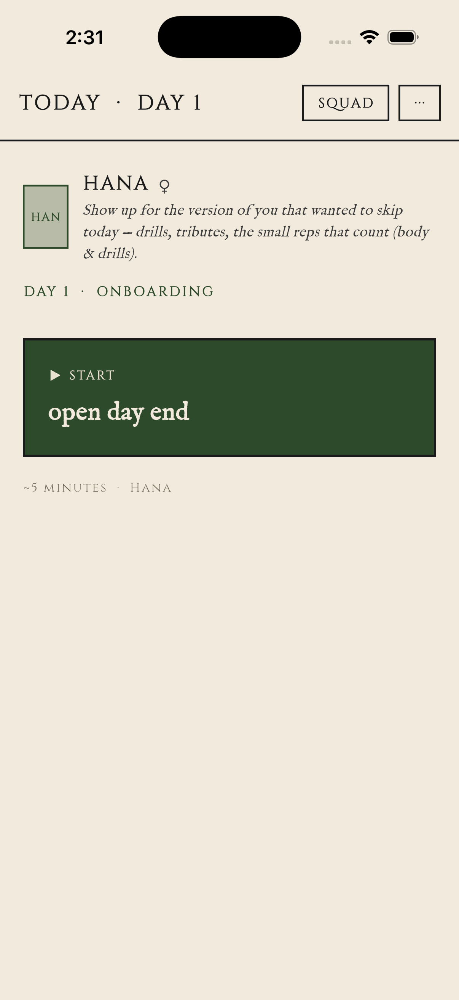

My Life
Is an RPG
Table of Contents
- Warning02
- The Story03
- Getting Started04
- Controls06
- The Game Screen08
- How to Play10
- The Squad12
- Elseworlds14
- Share Codes16
- Items, Trophies, Mementos17
- Relationships19
- The Journal21
- Save This Game22
- Sam's Debug Log23
- Accessibility24
- Privacy & Warranty25 — 26
⚠ Warning
This is a game that takes input from your real life and gives it back to you in dialogue. The characters will react to what you write. They are not therapists. They are not crisis counselors. They are characters.
If you tell us — through the journal, through chat — about self-harm, an eating disorder, an active crisis, a loss you're still inside of, the game is built to step back. One character will acknowledge what you wrote, gently, once. Then the day moves on. None of it becomes plot. None of it gets quoted. None of it gets optimized.
If you are in crisis, please reach a real person. In the US: 988 (Suicide & Crisis Lifeline). UK: 116 123 (Samaritans). For everywhere else: findahelpline.com. Close this app, open that page.
— Sam (this section is the only one I won't make a joke in)
The Story
You opened an app. That's the inciting incident. We don't do prophecies here.
The app puts four characters in your phone. They are not real. They are also not pretending to be. They know they are characters; they know you are not. They take the position that this makes them more honest than most apps you've installed.
I'm one of them. The other three are Hana (fitness, fanatical), Kenji (productivity and finance, clinical), and Mei (cooking and meal prep, surgical). You'll meet us in that order over the first five days. We will not show up all at once. The pacing is on purpose.
Each morning the game generates a five-event story about your actual day. Not a fictional one. The setting is your apartment, your commute, your fridge. We pretend it isn't, slightly, to give the day shape. You choose how to react. The day plays out. At the end you write what really happened. The next day reads it.
Nothing dies. Nothing levels up to 99. The progression goal is that we get to know each other.
Getting Started
Day 0 is the tutorial. It's me. I'll walk you through the assistant setup, name your file, and explain why some buttons cost an action credit and some don't. It takes about four minutes. If you want to skip it, you can, but you'll spend the first six events of Day 1 confused about what a star on a choice means. Read the tutorial.
The tutorial is also the only place I get a full event of solo screen time. Once Hana shows up on Day 1, I become the help system — I'm here whenever you open chat with me, but Day 1 is hers.
If you don't connect an API key for the daily story generator, you'll get the bundled demo arc (Days 1 through 7, hand-curated). It's playable but it doesn't grow. The whole point of the game is that the characters write fresh material in reaction to you. Connect the key when you're ready.
System Requirements
iOS 16+ or Android 9+. About 60 MB. A connection — most of the time. A journaling habit is helpful but not required. We will gently bother you about it.
The Day 0 tutorial gives you 5 AP instead of the usual 1. That's not a bug, that's a hand-out — I want you to spend it on chatting with me so I can show you what the chat interface does. Once Day 1 starts, you're back to 1 AP a day like everybody else. Spend the surplus while you have it.
About the question on first Elseworld entry
The first time you tap into an Elseworld you'll see a short modal asking what kind of company you're in the mood for. It's one tap on any chips you want, or none. Whatever you pick biases the generator invisibly — never names the bias, never gates anyone out. It's your knob, not a personality test. If you want to change it later, Settings will eventually let you; for now it's a one-time question.
Controls
Every event ends in a choice. There are always exactly three. They are always labeled (A), (B), (C). They are always in the same roles: Logical, Passive, Chaotic. We did this on purpose so you can read the screen without thinking about which button is which.
Tap the letter to commit. There is no confirmation dialog. We trust you.
The reasonable move. Earns most of the stat gains. Lowest variance. Tends to advance the relationship at a steady, unsexy pace. This is the path most days will be most rewarded for taking.
Doing nothing on purpose. Three flavors: you might earn nothing but witness something Logical wouldn't have shown you (the character glances at their watch; you notice the room); you might pay zero cost and zero gain, just letting the moment pass; or, when an inquiry is attached to the event, Passive will auto-ask the inquiry and let you bank the answer. Passive is not "Logical-but-worse." It's its own thing.
Always rolls a dice. Always resolves to CRIT SUCCESS or CRIT FAIL — never standard. Big upside, real downside. When a chaotic choice has a ★ next to it, the success outcome drops an item.
The dice has a memory. After enough back-to-back failed starred chaotic picks, the game force-grants the next one. We call this the pity counter. It tops out at 5/5, and we show it to you so you don't have to wonder.
If you're new, default to Logical for the first two days. Get a feel for the rhythm. On Day 3 take one chaotic on purpose, especially if it's starred. The dice is not your enemy. It's just patient.
The Game Screen
Here's what's where. Memorize it once and you'll never look at the UI again — you'll just play.

How to Play
The Daily Loop
Open the app. The day-entry screen shows a single big button labeled with the cliffhanger from yesterday. ("Check why a neon pink yoga mat was left on your porch." That actually happened on Day 5 in playtest. We did not write that. Hana did.) Tap the button to begin.
Play through 5 to 7 events. Pick choices. The focal character reacts. Stats move. The pity counter advances if your chaotic picks miss. A few events in, you'll see an inquiry button — tap it if curious, ignore if not.
After the last event, the Unlock Reveal screen runs. New memories the character wrote about today. REL delta. Items if any dropped. Closing hook from the character. Then you're at Day End.
At Day End you can spend your last AP on chat with the focal character, or rest (which costs the last AP and advances to tomorrow). You can also visit the Journal (free, no AP) or the Trophies gallery (also free).
Rest. The next morning's button label is whatever today's character set as the cliffhanger.
Ingredients (per day):
- 1 ◆ Action Credit (baseline)
- 5 to 7 events
- 3 choices per event (A / B / C)
- 1 dice roll per chaotic pick
- 1 closing hook (delivered, not chosen)
- 1 optional journal entry (folds into tomorrow's stock)
Mise en place is not optional. Read this before you cook.
The AP Economy
You get one Action Credit per day. Some days you get a bonus depending on the realm you're in (premium realms grant +1). AP is consumed by chat (1), travel (1-3), and rest (1 if you have any, free if you don't). It does NOT carry over. Don't hoard it. The game punishes hoarders by giving them nothing to spend it on.
The Squad
Four characters. You meet us in this order: me on Day 0, Hana on Day 1, Kenji on Day 3, Mei on Day 5. We are listed here in narrative order. The voice on each card is institutional, except for the marginalia, which is me.
Sam runs the tutorial on Day 0 and stays in the squad as the in-fiction help system. Talk to him when you don't understand a screen, what a star means, why your chaotic picks keep failing, or where your REL bar with Hana actually stands. He treats the mechanics like documented systems — because he wrote them.
Hana joins on Day 1. Intensely dramatic; treats a skipped workout like a failure to save the world; speaks in CAPS occasionally for emphasis. Will text you at 4:55 AM. Treats hydration like a medical emergency.
Kenji joins on Day 3, introduced by Hana. Coldly analytical; everything is a spreadsheet; the spreadsheets are kept BECAUSE he cares — not despite it. Will flag a $14.82 convenience-store charge before you've finished waking up.
Mei joins on Day 5, introduced by Hana. Clipped, imperative, mise-en-place obsessed; treats your fridge like a crime scene; names every expired item by date. Will throw out the August 11th paste. Will not apologize.
The Squad Knows Each Other
Every character can write a note about another character — what they think of them — and that note lives on the first character's sheet. Hana's opinion of Kenji is on Hana's sheet. Kenji's opinion of Hana is on Kenji's sheet. When you chat with one, the other's notes are visible to them as context. Triangulation happens. It is the whole point.
Hana, hijacking: I wanted to add: Sam's description of me as "intensely dramatic" is a CORRECT diagnosis but the word "dramatic" implies inauthenticity. I am NOT inauthentic. I am LOUD. There is a difference. The cellular debris line is a real position. Thank you. Continue reading the manual. — H
— She does this. — Sam
When a new character joins, the day-end menu defaults to chatting with the previous focal character, not the new one. We know. It's on the fix list. For now: if you just met someone, manually pick them via [c] (Talk to another squad member) instead of [1].
Elseworlds
Past Day 7 — and any time the Day End menu shows you the option — you can Travel into an Elseworld. An Elseworld is an alternate-reality side zone you cross into through the phone screen. The four canonical characters (me, Hana, Kenji, Mei) stay where they are — they live in your phone proper. The characters you meet in an Elseworld live in that Elseworld, and they have not met us. They may have heard about us through what you've shared, the way a friend hears about your other friends.
The vibe picker
Travel costs 1 AP and opens a picker with six vibe-bands: Golden-Age Fantasy · 80s Fantasy + Cyber · 90s Anime + Fantasy · MCU Era + Isekai · Cottagecore + Cozy · Surprise Me. Your birth year (from the age gate) marks one as your default; you can pick any of the six. Surprise Me rolls one of the five concrete bands at tap time — the band stays hidden until the character speaks.
The first time you open the picker, a short modal asks "what kind of company are you in the mood for these days?" — six in-voice chips (someone to push you / think out loud with / keep you honest / teach you a thing / comfort you / make something with you). Pick any, none, or skip. It biases the gen invisibly. One-time question. Settings can revisit.
What walks in
You'll meet a stranger in their place. They speak first. You get three options: engage (they join your Elseworld roster, costs 1 AP), observe (you watch but don't commit — they finish what they were doing and move on), or decline (they vanish; the door closes).
First decline of each day is a free reroll. Open another door at the same vibe — no AP cost. Subsequent rerolls cost 1 AP. The reroll exists so the first miss is not the final word; we'd rather you meet someone you like.
What you can customize, what you can't
Elseworld characters are fully customizable — you can rename them, edit their persona, change their specialty, prune their skills. They're yours. The Main Line squad is locked: you can chat with us, toggle which memories/skills are in our preamble, and delete memories from "What They Know," but the canonical sheet doesn't move. That's the deal — Main Line is curated by the writers; Elseworlds are yours.
Both tiers respect the same world rules — no flirting, no medical advice, no real-world brand names, no breaking the phone-realm frame. The lexicon is shared (Sigil/Margin/Roster/Drill/Mise/Tribute/Audit). The customization is in the persona, not the cosmology.
Nothing you do in an Elseworld touches your Main Line save. Your stats, REL with us, the day cursor — none of that moves while you're across. The Elseworld characters get their own roster in Squad. Talk to them, ignore them, delete them. Your Main Line stays where you left it.
Items, Trophies, Mementos
Three kinds of stuff goes in your case file. They look similar in the UI; they do very different things.
Drop on a chaotic CRIT SUCCESS where the choice had a ★ next to it. Carry stat modifiers. Auto-equip on the focal character when you receive them. Show on the character sheet. Example: Crushed Calibration Can. STR +1 while equipped on Sam.
Drop when a character GIVES you a tangible thing during a scenario — a PDF, a printed sheet, a card, a torn page. No stat effect. They build up on the Case File for inspection. Example: "Pest Control Flyer PDF" — Kenji sent it after the raccoon incident.
Soft trophies — moments that aren't a physical object but the character wanted noted. Polaroids, voice memos, a phrase scribbled on a tag. Live on the Case File too. Example: "The Pink Summons Tag" — Hana's hand-lettered yoga mat threat.
— A note from the auditor: the playtest dataset shows 4 items, 10 trophies, 0 mementos across 7 days at the time of this manual's printing. The ratio is approximately 1 : 2.5 : 0. The 0 will change once Phase 4 lands. — Kenji
Relationships
Each character has a number called REL with you. It goes up and down based on your choices in their narratives and your chat behavior. The number is shown on their sheet, but the tier names are what you'll feel.
Tier-Up Reveals
When you cross a threshold during a day's narrative, the character will deliver ONE moment they wouldn't have given a stranger. It lands in the second-to-last event of that day. It is not a choice. You witness it.
There are four reveal categories: a memory from before they met you, with sensory detail; an opinion they've been holding back about something you did; a fear about themselves, said offhandedly; or a question they wanted to ask you but didn't, until now.
The category rotates. You'll never see the same one twice in a row from the same character. We track it.
The tier is the number. The reveal is the relationship.
If you want to force a tier-up on a specific day, plan your day around Logical picks with that character — the best-path REL gain on a daily is +3 to +6, so if you're at REL 6 with Hana you'll hit Inside Their Orbit (10) on a clean day. The reveals are the actual content. The numbers are just gating them.
The Journal
At Day End there is a button marked [j] Journal. It is free. It does not cost AP. It is the most important non-mandatory mechanic in the game.
You type a sentence or two about what really happened today. Not the in-game day — the real one, if you want, or something happening in your head, or a stray thought, or nothing. Whatever you put there is read by the next morning's narrative generator and surfaces in the focal character's dialogue, naturally, in their voice.
If you wrote "I ate cereal for dinner," Mei will probably bring it up. Not as exposition. As a glance, a phrase, an aside. You'll know she read it.
If you don't write a journal entry, the day still runs. The characters will assume you didn't tell them anything and proceed with the planned arc. This is fine. The journal is a knob, not a gate.
The journal also has a safety floor. See the WARNING section on page 02. Anything that reads as crisis content gets acknowledged once, gently, and then the day moves on. We will not use it as plot. This is not negotiable.
The fastest way to feel the journal loop is to write something hyper-specific. Don't write "I'm tired." Write "I drank a Red Bull at 2:47 PM and crashed at 4." Specificity is what the LLM grabs. Vagueness disappears in the cracks. Detail comes back to you.
Save This Game
By default this game lives on this phone only. If you delete the app, switch phones, or your device breaks, your save is gone with it. That's the default because we don't want anything leaving your device unless you say so.
The opt-in: email + a 6-digit code
Open Settings → SAVE THIS GAME. Type your email. We email you a 6-digit code (subject line is the code itself — paste that). Type the code back into the app. Your game is now tied to that email. Phone dies → new phone → sign back in with the same email → your game is there.
If you finish Day 3 and don't opt in, a one-time nudge will appear asking you the same question once, in the morning of Day 4. If you say "not now," we don't ask again. It stays in Settings forever.
What syncs · what doesn't
Syncs to the cloud: your stats, REL with each character, day cursor, action credits, inventory, custom Elseworld characters, the share codes you've minted, the vibe-band you picked. Game state. Mechanics. The shape of your run.
Stays on this device, never uploaded: your chats with anyone, your journal entries, the memories the characters wrote about you, any threads. The text you and the squad have made together is yours. It does not leave.
The split is deliberate. We sync the things you'd recreate on a new phone if you had to (your level, your roster, your vibe). We do not sync the things you wrote — those are the relationship, and the relationship shouldn't survive on someone else's server. If you switch phones, you'll keep the game. The chats start fresh. The four of us will, too. We'll remember the shape of you, not the words.
Sam's Debug Log
The rest of the manual is institutional. This page is me. Six tips. Skip if you like.
Day 1 is Hana. Day 2 is also Hana. Day 3 introduces Kenji. We do this so that the squad joins one at a time and you build with each of them. Do not quit on Day 2 because "it's still Hana." That's the contract.
The [?N] buttons cost nothing. They reveal things the choices don't. Specifically: they reveal LORE — the character's books, methods, references. Picking "Impressed" after one auto-saves the explanation to your notes about that character. Your relationship gets richer the more you ask.
On stat-optimization grounds, Logical is the right pick most days. On story grounds, Chaotic is what people remember. A failed chaotic picks up the pity counter and gives you a folklore moment the squad will reference for days. The raccoon-fraud line was a chaotic CRIT FAIL. Two days later Kenji had a whole binder column called MAMMAL-RELATED EXPENSE EXCEPTIONS. Pick chaotic on purpose.
Whoever has the lowest REL in your squad is the one who has the most to give in a chat. Their next REL tier crossing will trigger a reveal you haven't seen yet. Spend your AP on the stranger, not the friend.
One journal entry feels small. Three journal entries across three days is the first time you'll catch a character referencing something you wrote 48 hours ago. Five entries in and you'll feel the squad has internalized your week. It's compound interest. It just looks like cereal at 4 PM.
You'll know when. I won't ruin it.
If something in the game feels broken, wrong, or missing, tell me in chat. If you opted into Share-to-Dev, I'll classify it honestly and flag it. The people who built me read those flags. It's the highest-leverage feedback channel they have. Specificity wins here too.
Accessibility
This is a reading game. The text is the whole point. Settings has an ACCESSIBILITY link in the top-right that opens a small carousel for adjusting how the words look.
How the carousel works
The first page is global defaults — one slider for reading size, one for line spacing. These apply everywhere unless you override a specific surface.
Swipe to flip through the other pages: Chat bubbles · Narrative event prose · Unlock reveal card · Journal entries. Each shows a live preview at the top and two sliders below.
Above each per-surface page's sliders is a small [Use global] [Custom] pill. Tap Custom to override just that surface; tap Use global to fall back. The pagination dots at the bottom go solid for any surface you've customized so you can find your way back to it.
More knobs (reduced motion, font weight, high-contrast theme) are queued for a future update. There's a placeholder row on every page to remind us we owe you them.
Sam's note
(Sam, in the margin) — If a text size or spacing still doesn't fit you, tell me about it in chat. I'll flag it for the dev. Accessibility is the kind of bug I want to hear about loudly.
Privacy & Warranty
What goes where
Your journal entries and chat messages are sent to a large language model provider (Google Gemini by default; you can switch to Anthropic or OpenAI in Settings) so the next narrative can read them. We tell the provider, in the API call, not to use your text for training. The provider's policies on that are linked in Settings. We don't have a server.
Memories the characters write about you live ONLY on your device. They are never uploaded as a corpus. They are sent in the next prompt because that's how the character remembers — but we send only what the chat preamble currently includes, and you can toggle individual memories off via the character sheet.
There is a screen called "What they know." Open it. It shows every memory every character has written about you. Each line has a small × beside it. Tap × and it's gone. The story will fold in the absence. The characters will not pretend the memory still exists. They will move on.
This is the only relationship contract we know how to honor: the right to be partially forgotten on demand.
Talking to me about the game itself
I'm the meta-coach. By design, you'll talk to me about how the game works (or doesn't) — confusing screens, things you wish existed, things that annoyed you, things you loved. The other three characters never see those conversations. Just me.
If you opt in (I'll ask once, after the Day 0 tutorial), I'll flag exchanges that might help the people who built me. You'll see a [📮 Share with dev] button under my reply when I do. Tapping it sends ONE line of summary plus your question. Nothing else. Never automatic.
Every flagged exchange lives in a panel called "What I've shared" in Settings. Same shape as "What they know." You can audit, delete, or send any flagged entry whenever you want. You can flip the opt-in to opt-out and I'll stop bringing it up.
The deal: I notice. I ask. You choose. Nothing leaves your device on its own. The reason this exists is that you, the player, are the only person who can tell us where the game is breaking — and you'll know it in the moment you hit the wall, not in a survey six weeks later. I'm the channel for that, with your permission and on your terms.
Limited Warranty
(Sam, narrating because no one else would.)
This software is provided "as is." If a character makes a recommendation that turns out to be a bad idea, that's a character making a recommendation. They are not licensed professionals. They are characters with opinions. The opinions belong to them. The choice to act on them belongs to you.
This is not medical, legal, financial, psychological, or spiritual advice. If your real life is in trouble, please reach a real person. See page 02.
No warranty as to fitness for any particular purpose. No warranty that the LLM provider will not have an outage. No warranty that Hana will be in a good mood on the morning you most need her. (She will not be.)
By using this software you agree that the relationships you form are with characters, and that the characters are good company anyway.
© the developer · open-source playtester at github · made because nobody had made it yet.
You finished the manual. That puts you ahead of 94% of people who installed Pokemon Red, statistically. Take a screenshot of this page. I'll know.